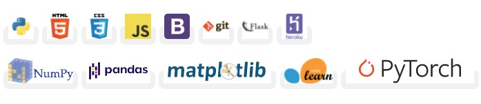
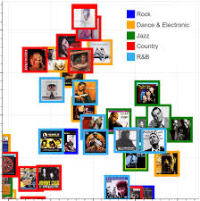

about me

Extract(or):
I enjoy the process of gathering data and its engineering.
Transform(er):
Focusing on getting data ready, for its main showdown is my day job.
Load(er):
I know how to write(to a DB as well).
skills
Bachelor of Science(Honours) in Mathematics - Sri Sathya Sai Institute of Higher Learning (Bangalore, Karnataka)
• CGPA - 8.2/10 (O grade)
• Among the top 5% across all Mathematics, Physics, Chemistry streams in Bachelors
Intermediate, MPC - Sri Chaitanya Jr. Kalasala (Viveknagar, Kukatpally)
• Marks - 976/1000
• Ranked among top 0.1% among all the students who appeared for the Telangana State Board Exams
• Scored 99 %ile on TS EAMCET
• Scored 97.5 %ile in JEE MAINS 2018
Secondary School - Narayana Concept School
• CGPA - 10/10
• Awarded All-round Excellence Award for the academic year 2015-16
• Selected as House Captain( Hansraj) from among 25+ applicants
Arthashastra Intelligence Databases Pvt. Ltd. - Data Science Intern
• Worked on NLP projects for client on customer reviews where I developed trained and tested complicated
NLP algorithms such as BERT, GPT2 etc. for emotion and sentiment analysis.
• Presented the analysis on open-source BI tool Apache Superset.
• Performed client case studies on regression, clustering and classification.
Accenture Data Analytics - Virtual Internship
Completed practical task modules on
• Project Understanding
• Data Cleaning and Modeling
• Data Visualization and Storytelling
• Presenting to the Client
recent projects

sow.reap.repeat.
SOW.REAP.REPEAT üåø
A simple ML and DL based website which recommends the best crop to grow, fertilizers to use and the diseases caught by your crops.
DISCLAIMER ⚠️
This is a POC(Proof of concept) kind-of project. The data used here comes up with no guarantee from the creator. So, don't use it for making farming decisions. If you do so, the creator is not responsible for anything. However, this project presents the idea that how we can use ML/DL into precision farming if developed at large scale and with authentic and verified data.
MOTIVATION üí™
In the crop recommendation application, the user can provide the soil data from their side and the application will predict which crop should the user grow.
For the fertilizer recommendation application, the user can input the soil data and the type of crop they are growing, and the application will predict what the soil lacks or has excess of and will recommend improvements.
For the last application, that is the plant disease prediction application, the user can input an image of a diseased plant leaf, and the application will predict what disease it is and will also give a little background about the disease and suggestions to cure it.
DATA SOURCE üìä
Crop recommendation dataset (custom built dataset)
Fertilizer suggestion dataset (custom built dataset)
Disease detection dataset
Built with üõ†Ô∏è

DEPLOYMENT üöÄ
This website is deployed at Heroku
You can access it here - sow.reap.repeat.
Note: The website may take a minute to load sometimes, as the server may be in hibernate state
How to use üíª
Supported crops
Usage ⚙️
You can use this project for further developing it and adding your work in it. If you use this project, kindly mention the original source of the project and mention the link of this repo in your report.
Further Improvements üìà
This was my first big project so there are lot of things to improve upon..
- Created - 4 Dec 2021
- View Live - sow.reap.repeat.
- View Github repository - sow.reap.repeat.

Movie Recommendation System
Movie-Recommendation-System
------------------------------------------------------------------------------


This application provides all the details of the requested movie such as overview, genre, release date, rating, runtime, top cast, reviews, recommended movies, etc.
The details of the movies(title, genre, runtime, rating, poster, etc) are fetched using an API by TMDB, and using the IMDB id of the movie in the API, I did web scraping to get the reviews given by the user in the IMDB site using beautifulsoup4 and performed sentiment analysis on those reviews.
Link to the application
Check out the live demo: Movie Recommendation System
Note
Use this URL - https://movie-recommendation-system0.herokuapp.com/ - in case if you see application error in the above mentioned URL
Don't worry if the movie that you are looking for is not auto-suggested. Just type the movie name and click on "enter". You will be good to go even though if you made some typo errors.
How to get the API key?
Create an account in https://www.themoviedb.org/, click on the API link from the left hand sidebar in your account settings and fill all the details to apply for API key. If you are asked for the website URL, just give "NA" if you don't have one. You will see the API key in your API sidebar once your request is approved.
How to run the project?
- 1. Clone this repository in your local system.
- 2. Install all the libraries mentioned in the requirements.txt file with the command pip install -r requirements.txt.
- 3. Replace YOUR_API_KEY in both the places (line no. 23 and 43) of static/recommend.js file.
- 4. Open your terminal/command prompt from your project directory and run the main.py file by executing the command python main.py.
- 5. Go to your browser and type http://127.0.0.1:5000/ in the address bar.
- 6. Hurray! That's it.
Sources of the datasets
- Created - 8 Dec 2021
- technologies used - Python|3.8, Framework|Flask, Frontend|HTML/CSS/JS, API|TMDB
- View Live - movie recommendation system
- View Github repository - Movie_Recommendation_System

Face Frontalization using Generative Adversarial Networks
Generative-adversarial-Networks-Face-profile-completion
Based on the idea of expediting the process of catching criminals using Neural Networks. This project pertains to using Deep learning model like adverserial networks(2 CNN neural networks) compete against each other , One to generate fake images(generator) , other to defy it(discriminator).
Objective: Given the profile of a person , can we generate the entire face structure.
2.1) Data.py ( How to get data onto the GCP platform )
2.2) Network.py ( Setting up the CNN's for generation and discrimination )
2.3) Main.py ( Running 500 epochs and taking the model evaluation paramater as L1, L2 and Binary cross entropy(as our results are binary in nature)
2.4) test.py ( To test our model over the test images )
3.1) Manual pre-processing of images to required dimensions
3.2) Tagging (pairing) of side and frontal as training set
Check the 499_real, 499_input , 499_generated in the Github repository for the accuracy achieved.
A bit of Theory for the concept:
There are two main concepts that we will need for the face Frontalization:
1. The Encoder/Decoder Network
2. The Generative Adversarial Network
Encoders and Decoders
THE ENCODER
The network takes images that are sized 128 by 128 as input. Since the images are in colour (meaning 3 colour channels for each pixel), this results in the input being 3 × 128 × 128 = 49152 dimensional. We can get away with a mere 512 dimensional vector (which is simply another way of saying “512 numbers”) to encode all the information that we care about. This is an example of dimensionality reduction: the Encoder network learns a lower dimensional representation of the input.
Here we start with input that is 128×128 and has 3 channels. As we pass it through convolutional layers, the size of the input gets smaller and smaller (from 128×128 to 64×64 to 16×16 etc on the figure above) whereas the number of channels grows (from 3 to 8 to 16 and so on). This reflects the fact that the deeper the convolutional layer, the more abstract are the features that it learns. In the end we get to a layer whose output is sized 1×1, yet has a very high number of channels: 256 in the example depicted above (or 512 in our own network). 256×1 and 1×256 are really the same thing, if you think about it, so another way to put it is that the output of the Encoder is 256 dimensional (with a single channel), so we have reduced the dimensionality of the original input from 49152 to 256. Having this lower dimensional representation helps us prevent overfitting our final model to the training set.
THE DECODER
As the name suggests, the Decoder’s job is the inverse of that of the Encoder. In other words, it takes the low-dimensional representation output of the Encoder and has it go through deconvolutional layers (also known as the transposed convolutional layers). The architecture of the Decoder network is often symmetric to that of the Encoder, although this does not have to be the case. The Encoder and the Decoder are often combined into a single network.
In this project this Encoder/Decoder network is called the Generator. The Generator takes in a profile image, and (if we do our job right) outputs a frontal one.
- Created - 8 Dec 2021
- technologies used - Neural Networks, Deep Learning
- View Github repository - Generative-adversarial-Networks-Face-profile-completion

Music Genre Classification using Lyrics
Music-Genre-Classification-using-Lyrics

Abstract
This project aims to build a system that can identify the genre of a song based on its lyrics. We identify a set of features that establish the style of a particular song. We curate a set of songs with ve labels - Rock, Hip-Hop, Jazz, Country and Pop. Then we design three models to classify the songs into their genres - Multi Layer Perceptron for multiclass classification, Random Forest for binary classification and Convolutional Neural Networks with word embeddings. We provide a user interface which would enable a user to input the lyrics of a particular song and our program would predict its genre based on the content of the lyrics.
Introduction
In the field of Natural Language Processing, the classification of genres of a song solely based on the lyrics is considered a challenging task. Because audio features of a song also provides valuable information to classify the song into its respective genre. Previously researchers have tried several approaches to this problem, but they have failed to identify a method which would perform significantly well in this case. SVM, KNN and Naive Bayes have been used previously in lyrical classification research. But, classification into more than 10 genres have not been particularly successful, because then the clear boundary between the genres is often lost. So, we try to use a dataset of five genres. Hence, we try to approach this problem as a supervised learning problem applying several methods. We analysed the relative advantages and disadvantages of each of the methods and finally reported our observations. With the advent of deep learning, it has been observed that Neural Networks perform better than the previously used models. So we designed a Convoluted Neural Network using glove word embeddings and analysed its performance.
Dataset
The dataset for this problem was not abundant mostly due to copyright issues. However, after comparing datasets from several sources, we found out a data set in Kaggle which was most suited for our purpose. The dataset is basically a collection of 380000+ lyrics from songs scraped from metrolyrics.com.The structure of the data is index/song/year/artist/genre/lyrics. The data was not properly structured according to our needs like there were some songs without any genre classified to it or there were some songs whose lyrics were absent. Sowe had to process our data before it could be fitted to any model for classification. Initially, we had to remove some irrelevant data from our dataset, making it more compact and easy to access. Like we removed artist and song year information thus creating just lyrics and genre mapping in our dataset. Then we extracted songs of five genres - Rock, Hip-Hop, Pop, Country, Jazz. And extracted 5000 songs from each genre, making the dataset practical and easy to analyze. Then we removed some songs which had very few words in its lyrics. Lyrics also contained some rhyming schemes like [chorus], [verse], [x1],[x2], we removed them for simplicity. Then we tokenized the lyrics text using NLTK tool in Python. Further, we applied stemming and removed punctuations. For stemming we used Porter Stemmer as we found it to be very effective. We also did some pre-processing of data for each of our models, which would be explained later.
Data Analysis
After preprocessing we analysed the data and identified the features of data which is the first step of any machine learning problem. We used Spark to analyse the data and visualized the data. This analysis helped us understand the features of the data that would be most useful for the task in our hand. We evaluated the average length of lyrics in each genre, and we had an interesting insight, Hip-Hop songs were longer as compared to the other genres. And the rest of the genres had almost similar lengths. Then we calculated the average number of unique words in each genre. (Figure 1) Here as well we found out that Hip-Hop songs had more unique words as compared to the rest. Then we calculated the most common words of each genre. (Figure 2) This would help us understand any correlation between the words used in lyrics and the genre type.
Approaches
We have taken three approaches to the problem, resulting in three models. In our first approach we use term frequency and inverse document frequency as our feature vectors and the genre classes as our labels to identify. We developed Naive Bayes, Random Forest, Support Vector machine and Multi Layer Perceptron model to classify the songs into multiple classes. In the second model we convert the problem into a binary classi cation problem and developed a classifier which will identify a song as Rock or Non Rock, Hip-Hop or Non Hip-Hop. We did this to identify the genres which are more distinguishable from the rest on the basis of the content of its songs. The third model that we used was the most effective of all, we used a Convolutional Neural Network, with Glove word embeddings as the feature vector.
Model I
We used term frequency and inverse document frequency as our feature vectors and the genre classes as our labels to identify.
Bag of Words
This is one of the most common approaches in text retrieval. Here, any unique term occurring in any of the document of the collection is regarded as a feature. One simple approach is to count the frequency of the word in the entire lyrical text. Another approach is term weighting scheme based on the importance of a term to describe and discriminate between documents, such as the popular tf - idf (term frequency times inverse document frequency) weighting scheme. In this model, a document is denoted by d, a term (token) by t, and the number of documents in a corpus by N. The term frequency tf(t, d) denotes the number of times term t appears in document d. The number of documents in the collection that term t occurs in is denoted as document frequency df(d). The tf-idf weight of a term in a document is computed as:
tf x idf(t, d) = tf (t, d) x ln(N/df(t))
We have also normalized the vector after applying the Count Vectorizer and Tf-Idf Weighing scheme.
Word2Vec
Next, we used the word vectors (word2vec) to represent our lyrical text. These semantic vectors preserve most of the relevant information in a text while having relatively low dimensionality. Word2Vec is an algorithm that takes every word in your vocabulary that is, the text that needs to be classi ed is turned into a unique vector that can be added, subtracted, and manipulated in other ways just like a vector in space. We trained word vectors using python's genism library. We generated 100-dimensional word2vec embedding trained on the benchmark data itself.
Algorithms
With our features and labels ready we fed them into a classi er and trained it. We used 4:1 split of the dataset for training and testing. We used python's sci-kit learn library to implement the following algorithms:
Naive Bayes: Implemented Bernoulli and Multinomial Naive Bayes, Support Vector Machine: Used the linear kernel, Logistic Regression, Decision Tree, Random Forest: Used 100 trees and the majority of all the classifications are the result, MultiLayer Perceptron Model: Experimented with various activation functions and hidden layers, Extra Trees Classifier: Used this algorithm to test with word2vec feature vectors, Extra Trees Classi er: Used this algorithm to test with word2vec feature vectors.
Model II
We converted the problem into a binary classification problem and developed a classifier which will identify a song as Rock or Non Rock, Hip-Hop or Non Hip-Hop. We did this to identify the genres which are more distinguishable from the rest on the basis of the content of its songs.
Features
We divided the data into two groups for each of the genre classes, like grouping dataset into rock and non-rock, hip- hop and non hip-hop etc. We used one hot encoding to represent the class labels and used term frequency-inverse document frequency to represent the features. We implemented this model to identify the genres which were easily classified as compared to the rest.
Model III
We used a Convolutional Neural Network to classify the songs into their respective genres. We used pre-trained glove vectors for this model.
Description of the model
The glove model we used is Google Glove 6B vector 100d. We have implemented two CNN models using Keras library: i. Simple convolution model: We have implemented a single layer of convoluted and maxpool layer. ii. Dense convolution model: We have implemented multiple convoluted and maxpool layers with filter sizes of 3, 4 and 5.(Figure 3)
User Interface
After training our models, we designed an user interface, when a user can enter the lyrics of a song and our program would predict the genre of the song.
Results
Now we report the results of experiments on these models on a dataset of 25000 songs equally distributed among all the genres.
Model I
A summarization of the results is demonstrated in the figure. We tested for with both TF-IDF vectors and counts as our feature vectors. We observe that TF-IDF vectors are better representation of the words in the lyrics. And among the algorithms, Multi Layer Perceptron performed better than the other algorithms with an overall accuracy of 63.5% accuracy. SVM comes close second with 61.9% accuracy. The confusion matrix shows that Hip-Hop is most accurately classified and Jazz is mislabeled most of the times. Then, we used word2vec as our feature vector, and applied the Extra Trees Classifier and Support Vector Machines, and we observed accuracy of 60.3% and 62.4%. Hence the use of word2vec did not produce significant improvement in our problem.
Model II
The results of binary classification were better, which helped us in analysing the problem in even more detail. We identified that using the words in the lyrics, Hip Hop genre was most accurately labeled as compared to the rest of the genres.
Model III
We ran the model multiple number of times, changing the following parameters:
In the simple convolutional neural network we could achieve an accuracy of 69.2% and in the dense model we could achieve an accuracy of 71%. Both were run for over a hundred epochs. This is a significant development as compared to the previous two models.
Conclusions and Future Work
From the models that we developed and the experiments that we conducted we can say that the Convolutional Neural Network Model performed significantly well compared to the other models. However, the training time for an CNN is very high even though pre-trained word embeddings were used as feature vectors. In that respect Multi Layer Perceptron, SVM and Random Forest perform well. Apart from Hip-Hop (as seen from the confusion matrix) other genres might be mislabeled at times. Accordingly, the user interface works quite well for hip-hop genre lyrics. However limited by time, we could produce some significant results in the field of music genre classification based on lyrics. There is a lot that can be done like better pre-processing of data. Adding more data for each of genre classes. We might train a model with lyrics as well as audio features and it is expected that we can get better results. Also, we might train a more complex model which would remember order of words like an LSTM, and we can experiment on our training data. Classification by lyrics will always be inherently awed by vague genre boundaries with many genres borrowing lyrics and styles from one another. For example one merely need consider cover songs which utilise the same lyrics but produce songs in vastly different genres, songs which have no lyrical content. To produce a state of the art classifier is is evident that this classifier must take into account more than just the lyrical content of the song. Audio data typically performs the strongest and further research could look into employing these models to the audio and symbolic data and combining with the lyrics to build a stronger classifier.
- Created - 20 Dec 2021
- View Github repository - Music-Genre-Classification-using-lyrics
Flight Fare Prediction
Flight Fare Prediction:
Table of Content
Demo
Overview
This is a Flask web app which predicts fare of Flight ticket.
Motivation
What to do when you are at home due to this pandemic situation? I started to learn Machine Learning model to get most out of it. I came to know mathematics behind all supervised models. Finally it is important to work on application (real world application) to actually make a difference.
Installation
The Code is written in Python 3.6.10. If you don't have Python installed you can find it here. If you are using a lower version of Python you can upgrade using the pip package, ensuring you have the latest version of pip. To install the required packages and libraries, run this command in the project directory after cloning the repository:
pip install -r requirements.txt
Deployement on Heroku
Login or signup in order to create virtual app. You can either connect your github profile or download ctl to manually deploy this project.

Our next step would be to follow the instruction given on Heroku Documentation to deploy a web app.
Directory Tree
├── static
│ ├── css
├── template
│ ├── home.html
├── Procfile
├── README.md
├── app.py
├── flight_price.ipynb
├── flight_rf.pkl
├── requirements.txt
Technologies Used


Future Scope
- Created - 8 Dec 2021
- View Github repository - Flight-Fare-Prediction

Sports Celebrity Classification
In this data science and machine learning project, we classify sports personalities. We restrict classification to only 5 people,
1. Maria Sharapova
2. Serena Williams
3. Virat Kohli
4. Roger Federer
5. Lionel Messi
Here is the folder structure,
Technologies used in this project,
1. Python
2. Numpy and OpenCV for data cleaning
3. Matplotlib & Seaborn for data visualization
4. Sklearn for model building
5. Jupyter notebook, visual studio code and pycharm as IDE
6. Python flask for http server
7. HTML/CSS/Javascript for UI
- Created - 8 Dec 2021
- View Github repository - Celebrity-Image-Classification

Same Old Chat bot
Build your Chatbot to get your favourite cricket match scores
Nah, its not the same old chat bot. Its all about implementing RASA stack which is a framework mainly used for NLP/NLU purposes. We ll be making a chatbot that you can deploy on slack as well so that you can fetch match scores at the tip of your hand(oh sorry your keyboard). Follow the below steps for the entire project building.
SETUP
If you haven’t installed Rasa NLU and Rasa Core yet, you can do it by navigating to the project directory and running:
pip install -r requirements.txt
You also need to install a spaCy English language model. You can install it by running:
python -m spacy download en
Rasa NLU model files
language: "en"
pipeline: spacy_sklearn
Files for Rasa Core model
HOW TO RUN LOCALLY:
Note: If running on Windows, you will either have to install make or copy the following commands from the Makefile
1. You can train the Rasa NLU model by running:
make train-nlu
This will train the Rasa NLU model and store it inside the /models/current/nlu folder of your project directory.
2. Train the Rasa Core model by running:
make train-core
This will train the Rasa Core model and store it inside the /models/current/dialogue folder of your project directory.
3. In a new terminal start the server for the custom action by running:
make action-server
This will start the server for emulating the custom action.
4. Test the assistant by running:
make cmdline
This will load the assistant in your terminal for you to chat.
HOW TO DEPLOY THE SLACK:
1. Go to your Slack app's settings page and use the Bot User OAuth Access Token:
And add this in the slack_credentials.yml file:
slack:
slack_token: "Bot User OAuth Access Token"
slack_channel:
2. Start the action server by typing the following command in terminal:
make action-server
3. Setup ngrok for the port that the action server is using by the following command:
ngrok http 5055
4. Copy the highlighted url in the above image into your endpoints.yml file:
action_endpoint: "your_url_here/webhook"
url:
5. Start the core server in another terminal window:
python -m rasa_core.run -d models/current/dialogue -u models/current/nlu --port 5002 --connector slack --credentials slack_credentials.yml --endpoints endpoints.yml
This will start the server at port 5002.
6. Now you have to expose this port to the world by using ngrok, open another terminal and type:
ngrok http 5002
7. Take the above url and paste it into the Events Subscription page of your slack app in the following format:
your_url_here/webhooks/slack/webhook
- Created - 22 Dec 2021
- View Github repository - SameOldChatBot

Self Driving Car
SelfDrivingCar
Running the simulation:
python SearchAgent.py <config_file_name>
For example python SearchAgent.py dynamic_config1.txt
On the gui your car is the white color car.
There are 5 example config files provided for your testing.
dynamic_config.txt is the config file which contains the starting location of your car and the number and the starting location of other cars on the road. Your assignment will be evaluated against a different set of config files.
====================================================================================
We describe the simulator in which you have to write the code. There are 5 files provided.
- Simulator.py -contains the code for the gui.
- Environment.py – contains the code for environment and movement of other cars.
- searchUtils.py – contains utility functions for search algorithms. You may use these utility functions. You can add/modify these utility functions as per your requirement.
- randomagent.py – contains the example code for a car which takes a random action at each timestep.
- SearchAgent.py – contains the basic code for your car.
Function in the SearchAgent.py which returns the sequence of actions to be taken by the car. This function is called at each step.
The drive function takes as input the python list of a goal states (with only one element) and the inputs sensed from the environment. On calling env.sense it returns the status of the grid as seen by the car. 0 if the cell is clear, 1 if there is any other car present and -1 if the information is not known to your self driving car (i.e. the cell is not in the visibility range of the car).
As an example, the drive function can implement A* search from the car’s current location to the goal state and stores the action sequence.
The update function in SearchAgent class is called at each timestep. Your algorithm should choose the action in the update function based on the action sequence generated using the drive function.
The intended action is conveyed to the environment using act function which returns the updated state of the car and also updates the state in the environment.
Environment first updates the position of your car before updating the position of any other car.
Following are the class variables for the agent class:
valid_actions – list of valid actions available for your car.
Env – Instance of the environment class.
Searchutil – Instance of the searchUtils class
state – dictionary representing state of your car. State[“location”] – provides the location of your car in grid cell. For eg. If state[“location”] = (2,3) it means that car is located in the cell 2,3.
Following are the functions which you can use to write the algorithm for self driving car to choose an action at each timestep.
Environment class functions – can be accessed by calling self.env.
- getGoalStates() – returns the list of goal states.
- act(car,a) – takes action a for the car and returns the new state. Updates the position of the car in the environment.
- sense(car) – returns the grid cell status as seen by the car. 1 if another car is present, 0 if the cell is free and -1 if the cell is not visible to your car.
- applyAction(s,a) – returns the location where the car will move on applying action a in state s based on the inputs sensed by your car. Does not execute the action and does not update the state of the car in the environment.
- getAction(s1,s2) – returns the action which takes a car from state s1 to state s2. The purpose of this function is to help you in retrieving the action sequence if you have a sequence of states visited after calling applyaction/act function. Please note that this function will not check for presence of other cars so a getAction will return forward if you pass it states (3,0) and (3,1) even if there is a car in (3,1). You need to use applyAction function to get the location where car will move on applying given action. You can also use the information about the presence/absence of other cars from the sense method.
Searchutils class functions – Searchutils class contains utility functions for the search algorithm can be accessed by calling self.searchutil.
- retrieveActionSequenceFromState(s) – retrieve the sequence of actions taken to reach the give state s. The action sequence is updated each time applyAction is called on env.
- isPresentStateInList(state,searchlist) – returns 1 if the state is present in searchlist
- isPresentStateInPriorityList(state,searchlist) – returns 1 if the state is present in priority list searchlist.
- insertStateInPriorityQueue(searchList,state,distanceToGoal) – insert state with cost distancetogoal in the searchList.
- checkAndUpdateStateInPriorityQueue(searchList,state,distanceToGoal): checks if the state is present in the searchList with a cost higher than distanceToGoal. If the existing cost is higher then state is reinserted with the cost distancetoGoal in the searchList.
- Created - 26 Dec 2021
- View Github repository - SelfDrivingCar

Data Science Salary Estimator
ds_salary_proj
Data Science Salary Estimator: Project Overview
Code and Resources Used
Python Version: 3.7
Packages: pandas, numpy, sklearn, matplotlib, seaborn, selenium, flask, json, pickle
For Web Framework Requirements: pip install -r requirements.txt
Scraper Github: https://github.com/arapfaik/scraping-glassdoor-selenium
Scraper Article: https://towardsdatascience.com/selenium-tutorial-scraping-glassdoor-com-in-10-minutes-3d0915c6d905
Flask Productionization: https://towardsdatascience.com/productionize-a-machine-learning-model-with-flask-and-heroku-8201260503d2
Web Scraping
Tweaked the web scraper github repo (above) to scrape 1000 job postings from glassdoor.com. With each job, we got the following:
Data Cleaning
After scraping the data, I needed to clean it up so that it was usable for our model. I made the following changes and created the following variables:
1. Python
2. R
3. Excel
4. AWS
5. Spark
EDA
I looked at the distributions of the data and the value counts for the various categorical variables. Below are a few highlights from the pivot tables.


Model Building
First, I transformed the categorical variables into dummy variables. I also split the data into train and tests sets with a test size of 20%.
I tried three different models and evaluated them using Mean Absolute Error. I chose MAE because it is relatively easy to interpret and outliers aren’t particularly bad in for this type of model.
I tried three different models:
Model performance
The Random Forest model far outperformed the other approaches on the test and validation sets.
Productionization
In this step, I built a flask API endpoint that was hosted on a local webserver by following along with the TDS tutorial in the reference section above. The API endpoint takes in a request with a list of values from a job listing and returns an estimated salary.
- Created - 22 Dec 2021
- View Github repository - Data Science Salary Estimator
Multiple Image stitching in Python
Multiple Image stitching in Python
This repository contains an implementation of multiple image stitching.
Requirements :
- Python 2.7
- Numpy >= 1.8
- OpenCV 3.1.0
Project Structure :
|_ code -|
| |-- pano.py
| |-- txtlists-|
| |--files1.txt ....
|
|_ images - |
| |- img1.jpg
| |- abc.jpg
| .... and so on ...
Demo txtfile : files2.txt :
../../images/1.jpg
../../images/2.jpg
../../images/3.jpg
../../images/4.jpg
To run :
`python pano.py <txtlists/filename_.txt>`
Outputs !!


Other WebSources for Images :
Base paper for panorama using scale invariant features :
[1] "Automatic Panoramic Image Stitching using Invariant Features", Download.springer.com, 2016. [Online]. Available: matthewalunbrown.com/papers/ijcv2007.pdf
Test images taken from :
[2]"PASSTA Datasets", Cvl.isy.liu.se, 2016. [Online]. Available: http://www.cvl.isy.liu.se/en/research/datasets/passta/.
[3] "OpenCV Stitching example (Stitcher class, Panorama)", Study.marearts.com, 2013. [Online]. Available: http://study.marearts.com/2013/11/opencv-stitching-example-stitcher-class.html.
[4] "Github daeyun Image-Stitching Test Images", 2016. [Online]. Available: https://github.com/daeyun/Image-Stitching/tree/master/img/hill.
[5] "Github tsherlock Test Images", 2016. [Online]. Available: . https://github.com/tsherlock/panorama/
- Created - 22 Dec 2021
- View Github repository - Multiple Image stitching in Python
Contact me
example@gmail.com
Phone
91 98 **** ****